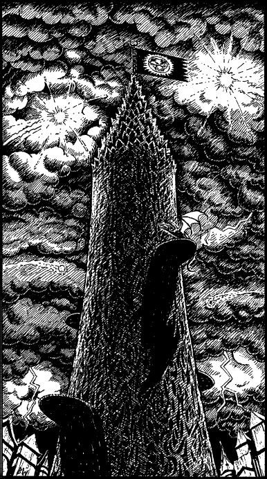

320
You walk through the armoury, and past an arsenal of fiendish devices that have yet to be unleashed on the allied armies of the Freelands, but are destined soon to be shipped to the battle front to speed Gnaag’s conquest of Magnamund. A passage at the far end of the hall takes you past a barracks-like room where Nadziranim sorcerers are busily engaged in the testing of new psychic weapons upon a group of grey-skinned slaves, mindless Grolth from the swamps of the Tadatizaga. Their pitiful screams of agony make your blood run cold, yet you dare not intervene to prevent their torture for fear of jeopardizing your mission. Hurriedly you climb a staircase that emerges at the foot of a monstrous tower, as black as death itself. Two fireballs split open the rolling black clouds and in the brilliance of their explosions you see a huge metallic flag flying from the tower’s crystal spire. It is emblazoned with the emblem of Darklord Gnaag, and at once you know that you have found what you are looking for: the Tower of the Damned.

As your eyes move down the tower, you notice a large oval platform jutting out from the black steel wall. Perched on this platform is an Imperial Zlanbeast, similar to the one that bore you to Aarnak. It, too, bears Gnaag’s sign, branded deep in its leathery hide. Its presence suggests that its master is in residence, and as you cross the courtyard and walk towards the tower door, your senses tingle in anticipation of the confrontation that awaits you within.
As you climb the steps that lead to the door, it slides open to reveal the outline of a guard silhouetted against a background of scarlet fire. In a claw-tipped hand he holds several slivers of crystal, each a different colour, and, as you reach the top of the steps, he draws a silvery-grey one and points it at your face. ‘State your name, minion of Ghanesh!’ he commands, ‘or begone from the Tower of the Damned.’
You sense that the guard does not suspect you of being an impostor, he is merely performing a routine check on all who visit the tower. To have come this far into the Imperial Sector means that you have passed through several checkpoints already, and so the guard does not regard you as a threat to his master’s safety. In order to be allowed to pass, you must state the name of the Ligan whose identity and robe you are using as a disguise.
If you wish to say your name is Cagath, turn to 138.
If you wish to say your name is Morgath, turn to 19.